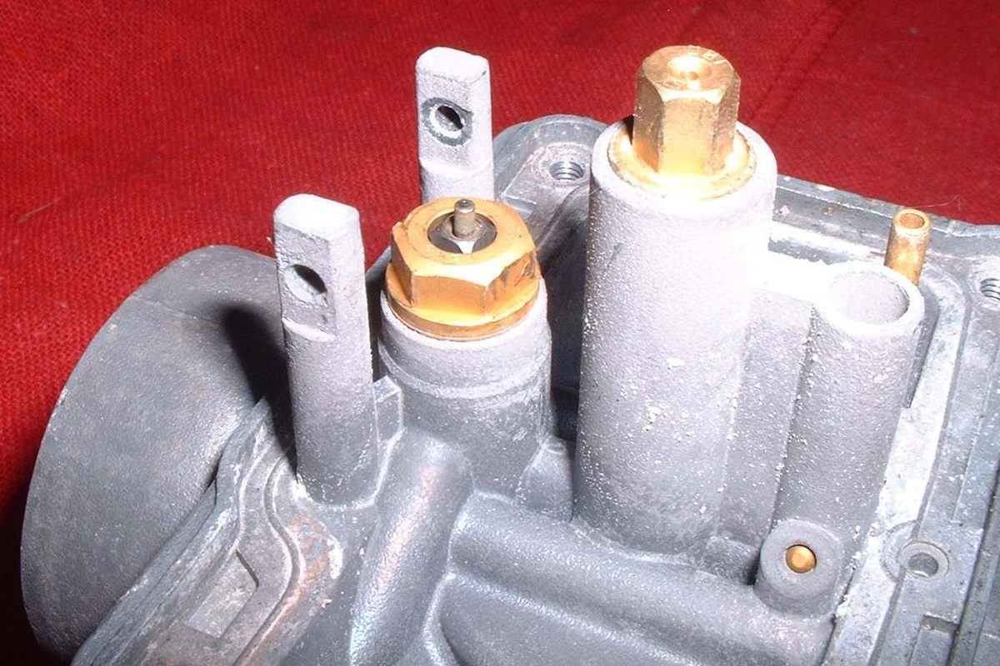
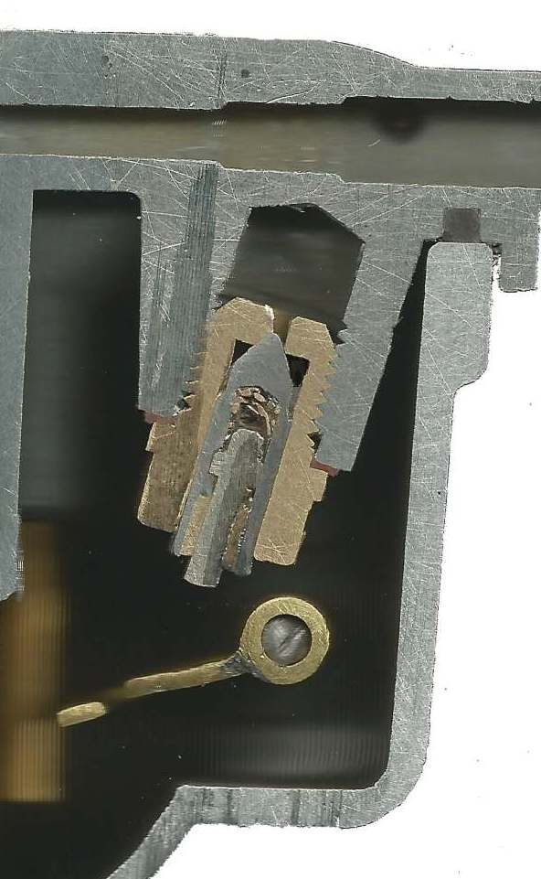
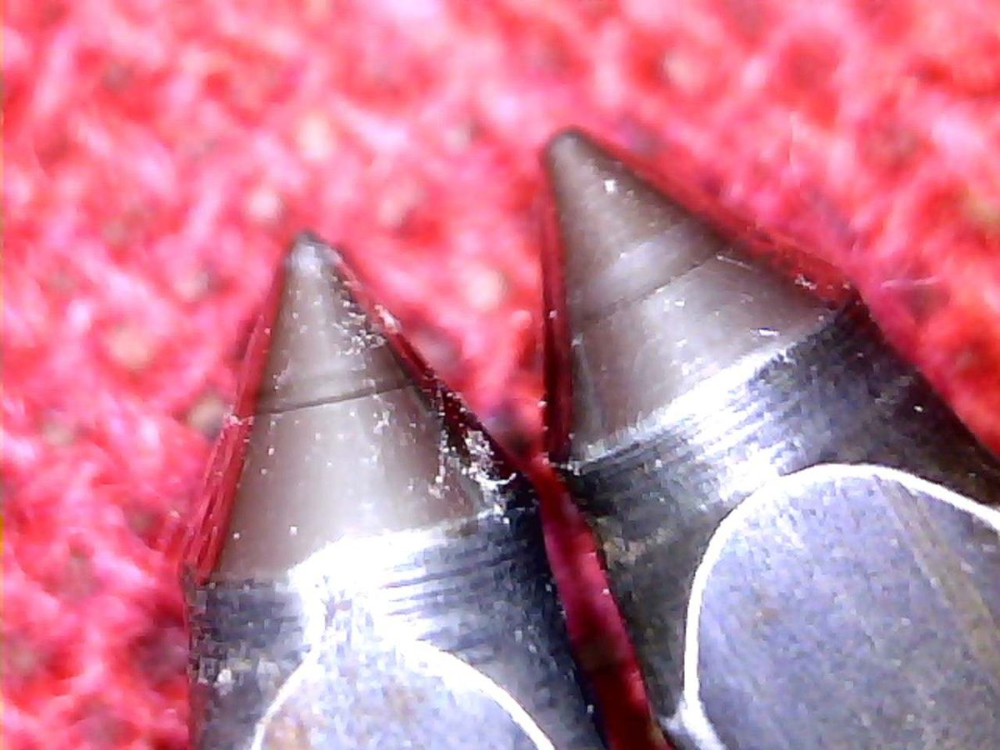

Home mechanic (basic tools) · Time: 30 to 60 min with the carburettor off (estimate) (estimate)
The float bowl holds a fixed level of fuel. As fuel is used, the float drops and opens a small needle valve; as the bowl fills, the float rises and pushes the needle shut. If the needle sticks open or the float sinks, fuel overflows: it pours from the overflow pipe, floods the engine, and can run into the crankcase and thin the oil. If the level is too low, the engine runs lean (too much air). This check finds which part is at fault.
Safety
- Turn the fuel OFF before you open the bowl. Work outdoors, engine cold, no flames, extinguisher near you.
- If fuel has been pouring from the overflow, check the oil level and smell the oil. Fuel-thinned oil damages the engine: see Oil smells of petrol.
You need
- Your manual's float height figure. It differs for every carburettor model. Do not guess it.
- A needle and seat kit if the needle tip has a worn ring.
Steps
- Quick test on the bike: sometimes a stuck needle frees if you tap the float bowl lightly with a screwdriver handle while the fuel is ON. If the overflow stops, the needle was sticking on dirt; still do the full check, or it will happen again.
- Turn the fuel OFF, drain the bowl and remove the carburettor if you cannot reach the bowl. See Clean the carburettor for removal.
- Remove the float bowl. Push the float pin out from the correct side, supporting the post so it does not snap.
- Lift out the float with the needle hanging on it.
- Needle: look at the rubber or metal tip with a torch. A ring or groove worn into the tapered face means it no longer seals. Replace needle and seat together.
- Seat: look for dirt or a damaged edge. Clean with cleaner and air only.
- Float: shake it near your ear. Liquid inside means it leaks and sinks; replace it. Check the joints to the arms are sound and the float is not crushed. Plastic floats can also crack.
- Float pin: a deep groove worn in the middle means replace it.
- Refit the needle and float. Hold the carburettor so the float tab just touches the needle without compressing its spring, and measure the float height from the bowl gasket face to the float, as your manual shows.
- If the height is wrong and the float has a metal tab, bend the tab a very small amount and measure again. Plastic floats with no tab are usually not adjustable; a wrong height means a worn needle or wrong float.
- Fit a new bowl gasket, refit the bowl, refit the carburettor and turn the fuel ON.
More tips
- A stuck float pin or post that is badly gummed can be soaked in penetrating oil for several hours before it is driven out with a very small punch. The posts are weak and snap easily. See Remove a stuck float pin without breaking the posts.
- Floats may be all metal, plastic and metal, or all plastic. A metal tab can be bent to adjust the height. A plastic float with a metal insert may still have a bendable metal tab.
- The overflow tube is a rough guide: the fuel level sits a little below its height. Use your manual's figure to set the level.
- Leave the fuel tap off whenever the bike stands. If the inlet needle fails, fuel can fill the crankcase.
Check your work
- No fuel from the overflow pipe after ten minutes with the fuel ON and the engine off.
- The engine idles without black smoke or a strong fuel smell.
If it did not fix the problem
- A tiny piece of rust or dirt on the seat makes the carburettor overflow. A sharp tap with a plastic tool can free it: Free a stuck float needle by tapping the carburettor.
- A ring worn into the needle tip, or a leak that continues after tapping, means a new needle and seat: Check and replace the carburettor needle valve and seat.
- Still overflowing with a new needle: the float height is wrong or the float is sinking. Check again, or ask a workshop.
- Engine still rich: Engine runs rich. Lean and pinking: Engine runs hot and lean.